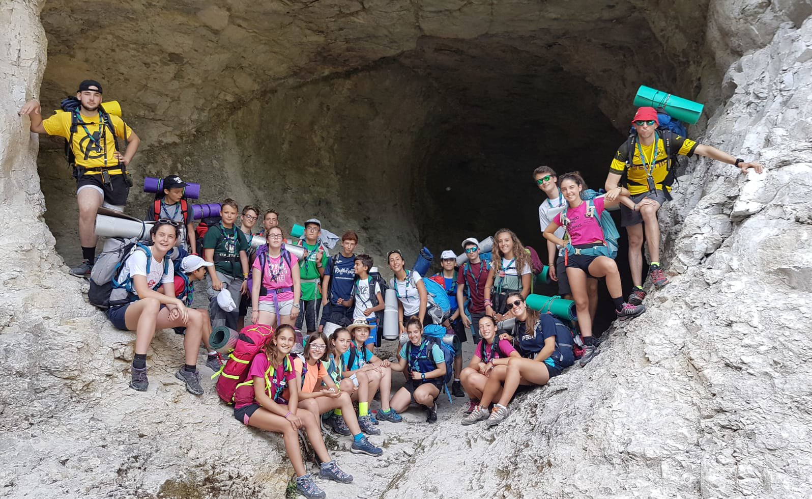

El Grupo Scout Jairoi, residente en la parroquia del Corazón de Jesús de Pamplona, es fundado por D. Agustín García Larragueta el 11 de abril de 1987. Los colores de su pañoleta son el verde y el morado.
Desde entonces, el Grupo Scout ha estado trabajando con niños y jóvenes del barrio de Iturrama y de toda Pamplona. Actualmente, el Grupo pertenece a la Unidad de Atención Pastoral del Corazón de Jesús y Santa Vicenta María, en cuyas parroquias desarrolla sus actividades.
Habitualmente, desarrollan sus actividades los sábados por la tarde, de 16:30h a 18:30h, aunque también tienen otras actividades como la Operación Kilo, en favor de las Hermanitas de los Pobres, o el Día del Grupo.
Puedes encontrarnos en la parroquia del Corazón de Jesús de Pamplona (C. Serafín Olave, 21) preguntando por nosotros.
También puedes contactarnos llamando al teléfono de la parroquia, el 948 266 608, o a través del correo coordinacion.